- Case study
- Sports
- iOS
OneFootball App
A teardown and redesign of the football app I’ve used every day since 2015.
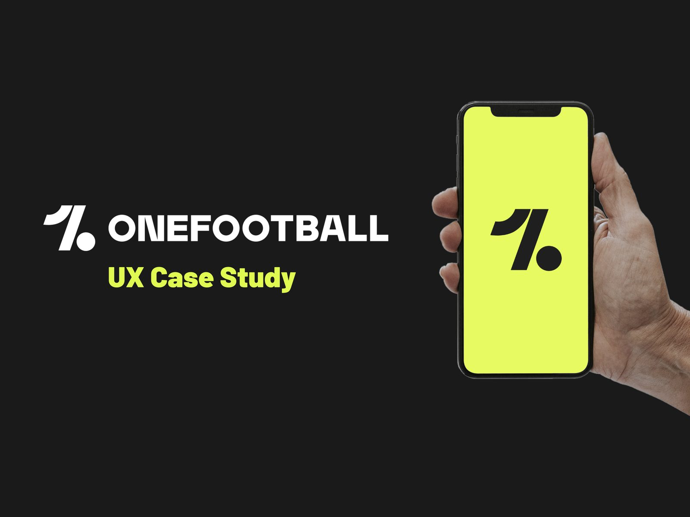
Context
What is OneFootball?
OneFootball is a popular mobile app for football fans like me. It covers everything football: news, live scores, highlights, statistics and reports from 200+ leagues in 12 languages.
This case study breaks down one of the most loved football apps to understand why it works and to offer my take on improving the experience. To suggest changes, it helps to understand why certain decisions were made in the first place. As a regular user, I admire how simple it is to navigate and how well it delivers on its promise with great visual design.
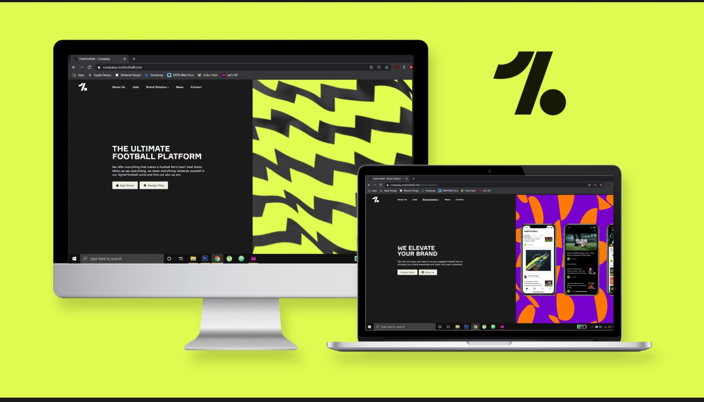
Current experience
Navigation and user journeys
I mapped three common goals to see how many steps each one takes.
Goal 1: Look up your club’s next fixtures
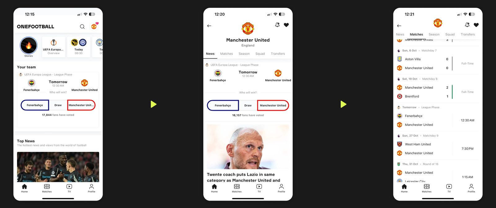
Goal 2: Find the result of a match from over a week ago
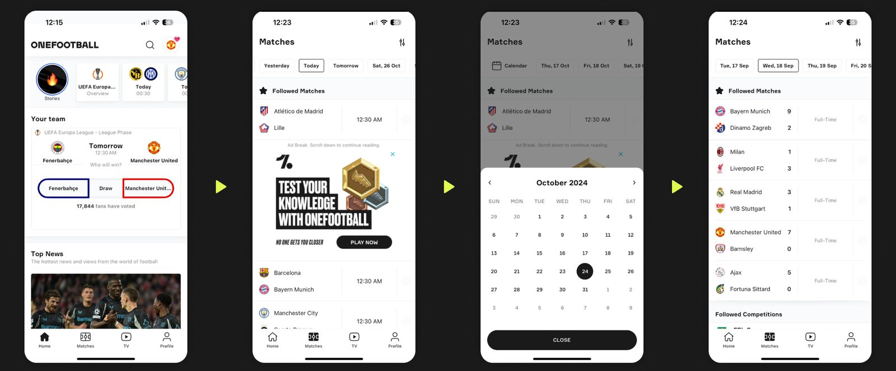
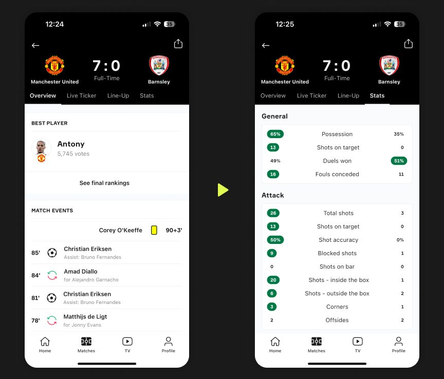
Goal 3: Compare a player’s current stats and all-time record
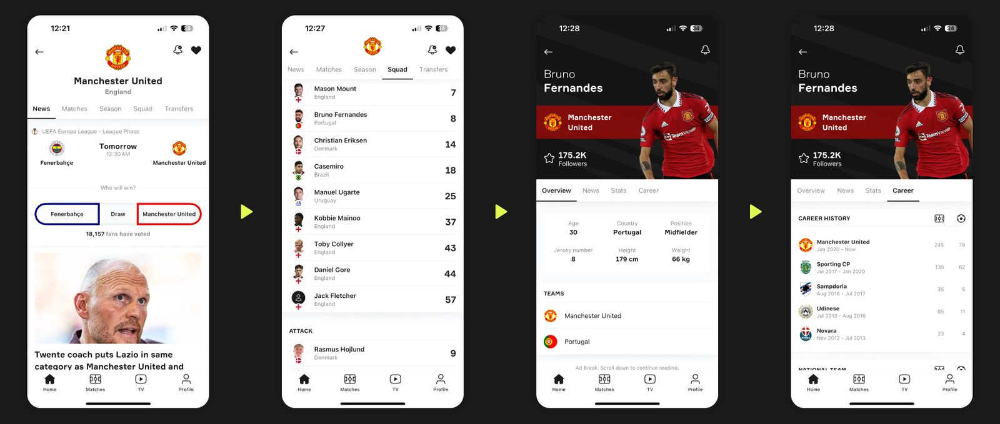
Analysis
What works and what doesn’t
Pros
- Free for everyone to use.
- No sign-up needed. You can get to your goal as soon as the app opens.
- Intuitive flows. Most goals take about 3 steps, which helps explain its 100M+ monthly active users.
- Mature categorisation and hierarchy that reveals information progressively.
- Meets accessibility standards, with support from desktops to smartwatches.
- All the detailed information and reports a fan needs, in one place.
Cons
- Long loading times due to graphics and ads.
- Scrolling bugs make the list refresh and jump back to the top.
- Ad placement and quality are questionable, and ads don’t always work.
- Reliance on individual contributors means some articles aren’t credible and have spelling mistakes.
- Content sometimes fails to load, leaving a large blank space you can’t interact with.
- The video player lags and sometimes stops working altogether.
Redesign
Architecture
As a fan, I want to know where everything lives, so I can reach scores, news or players without hunting.
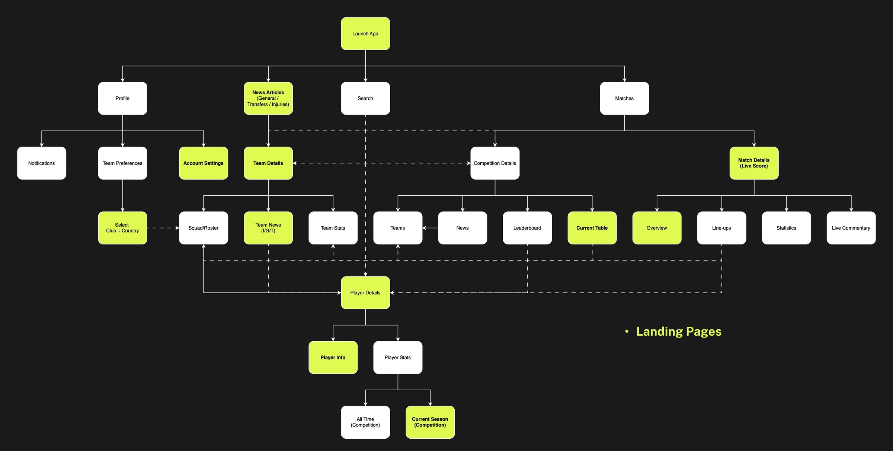
Redesign
News
As a fan, I want to skim the latest about my club in a few seconds, so I can stay up to date between everything else.
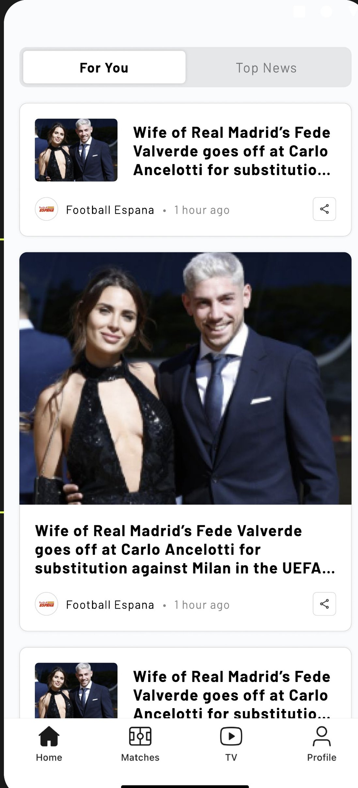
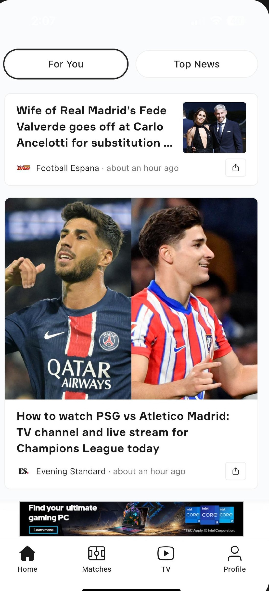
Drag across the screen to compare current and proposed
Information hierarchy
Headline first, details after
Small and large cards now follow the same order, so the eye always knows where to go.
- HeadlineWhat people look for first.
- Publisher and timeSignals credibility and freshness.
- ShareAlways in the same spot, so it is quick to find.
What changed
Two cards, built for scanning
Each card type follows how people read a feed.
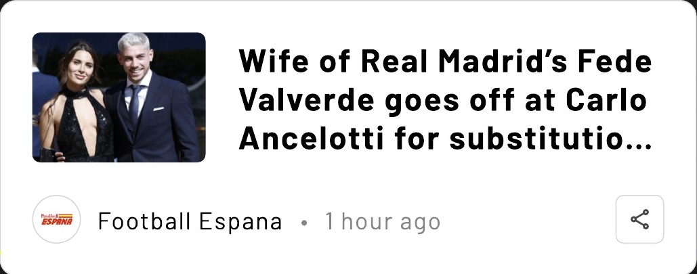
Small card
Image left, headline right
People scan a feed from the top left. The image anchors the eye and the headline follows naturally.
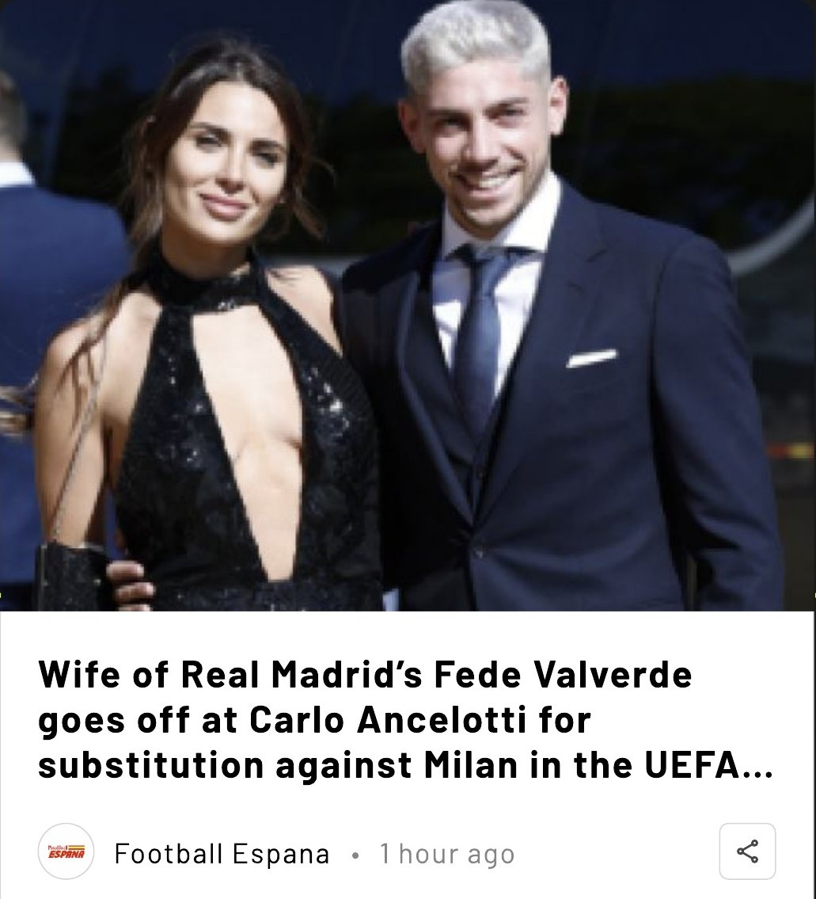
Large card
Big image on top
A large image draws the eye first, then the headline and source. It suits how people scan big, visual stories.
Redesign
Matches
As a fan, I want to see when my team plays and how it is going at a glance, so I never miss a match.
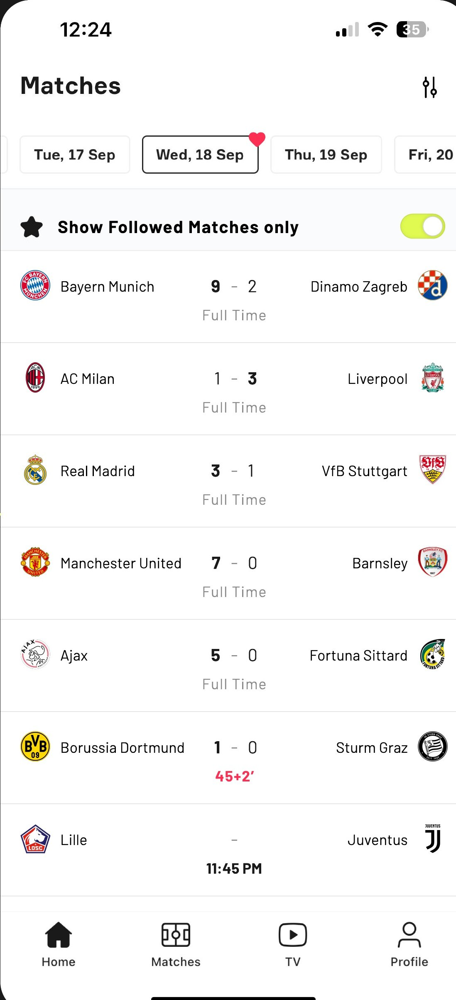
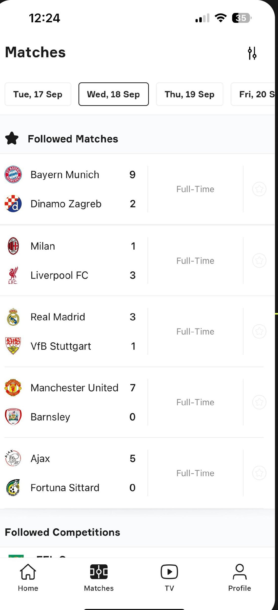
Drag across the screen to compare current and proposed
What changed
Find your match, read it at a glance
Three changes that cut the searching and the scanning.
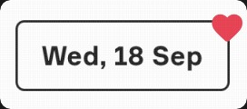
Date picker
A heart on match days
Shows at a glance which days your team plays, so you never have to search for them.
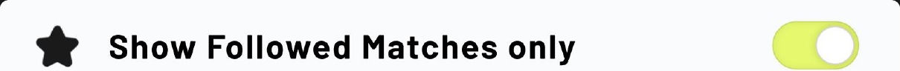
Filter
Followed matches first
A switch shows only the matches you follow. It starts on, so the most relevant games come first.
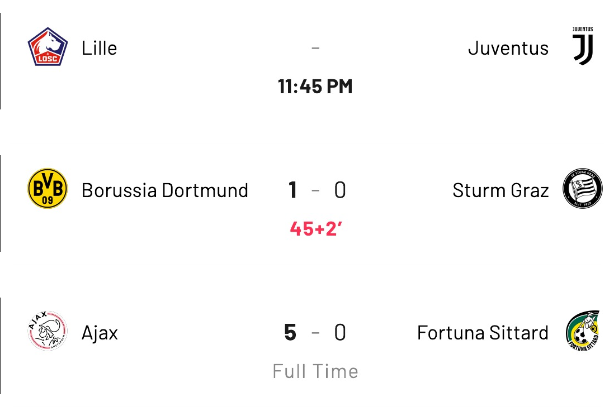
Match card
One card, three states
Teams sit side by side. Before kick-off the time stands out, during the match the leading score is bold and the minute is red, and at the end the winner is highlighted.
Conclusion
A great product, still evolving
I’ve used OneFootball every day since 2015. For millions of fans like me, its strengths far outweigh its weaknesses. As the product evolves, I’d focus next on performance, personalisation and user behaviour. The visual design, with its bold colours and typefaces, is already excellent.
Kudos to the design and development team for their user-oriented goals (pun intended).